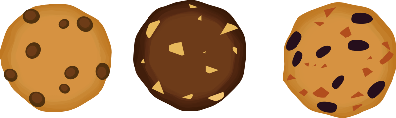
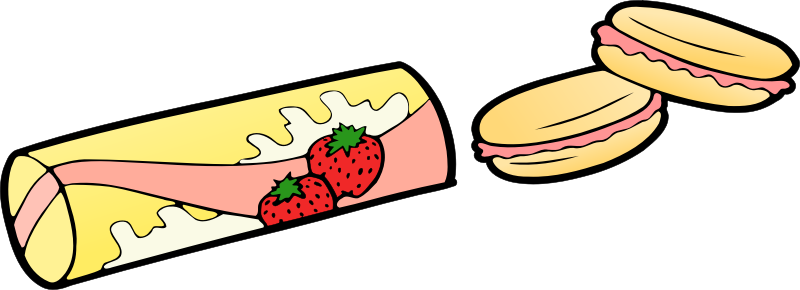

5 Biscuits That Complete India's Tea Time Affair

It is no secret that Indians love their good ol' chai! Give us a cup of Masala Chai
and we won't complain.Conversations over sips of chai accompanied by tea time snacks define India's tea-time.
We do love our pakoras or fritters and everything oily to go with our tea but the 'biskoot'has a special place in our hearts.
India Food Network is celebrating National Biscuit Day with the 11 biscuits that have been inseparable from our chai.
Parle G
From every chai tapri on every nukkad of the country to a cup of tea at home or office, Parle G is tea's number one best friend!
Its vibrant yellow and white packaging is enough to recognize this biscuit from far away, whether in a jar or on the aisle of
a local grocery store. This rectangular glucose biscuit with an almost sweet taste is the perfect dunking snack to start off
chai mornings or celebrate tea-time afternoons.
Did You Know: The monthly production of 1 the distance between the Earth and Moon.Parle G biscuits,
when stacked against one another, can cover the distance between the Earth and Moon.
Marie Gold
More often than not, when Parle G is not available, Marie is the next best choice for chai time. These thin discs
have their own fans, who think that Marie is the ideal biscuit for dipping in tea, making it better than it already is.
A crispy and milky biscuit, tea accentuates the taste and flavour of this evenly baked cookie. With Vita-Marie coming in,
Britannia managed to garner attention from the younger crowd too who took their tea time seriously but wanted to take the
healthy route.
Did You Know: Mariebiscuit is made in such a way to prevent it from crumbling when dipped into tea.
Good Day
Britannia's buttery, nutty and all things sweet biscuit is too good to betrue for a biscuit-loving nation like India. It is one
of those biscuits thatis considered a complete breakfast for those who have busy mornings. From plain to cashews to chocolate,
no matter the type, it can be paired with tea for an ultimate good day!
Did You Know: Britannia launched Good Day biscuits in 1986. Almonds were added to Good Dayonly in 1989 and chocolate in 2004.
Nice Tim
True to its name, Nice Time biscuits can bring a smile to anyone who loves sugar!Sprinkled with sugar crystalson its surface,
the sweet biscuit has a coconut-y twist to it. Nice Time biscuits add a nice touch to tea with every bite giving us a reason
to pick yet another one from the packet until there's nothing left.
Did You Know: The original Nice Time is so good that this is the only Britannia biscuit that isn't available in a variety of flavours.
Bourbon
Something chocolate-y, something sweet, something creamy and everything delicious is Bourbon biscuit for you. It is one of those biscuits that
is so addictive, it can be devoured just as is. Some tea lovers enjoy it with their afternoon cup and profess that it's one thing that they look
forward to when it comes to tea time. They find it hard to replace it with any other biscuit because Bourbon is bae.
Did You Know: The biscuit is named after the place where Professor Hans Zehnloch trademarked the biscuit - the one with 10 holes - BOURNville and hishometown – BONn.
Contact Tea Download